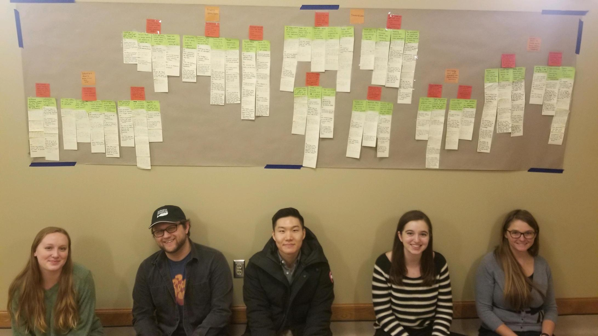

My Role: Consultant
Team: Jill Davidson, Caitlin Helgesen, Elizabeth Baca, Nate Coryell, Dan Kim
Timeframe: September – December 2018
Project Goal
This project was conducted as a part of my Contextual Inquiry & Consulting Foundations course. Each team was tasked with solving the problem of a real-world client over the course of three months. Our team’s client was an organization in Detroit that aims to provide data about the area to the community.
Problem
Our client had a lot of data to manage, and their file system relied largely on institutional knowledge. Archived projects were sorted by year and then project, so it was difficult for employees to find data they were looking for if they did not know what project the data was used for or what year the project ended. They wanted a way to organize this data so that it would be intuitive enough for even new employees to understand.
Contextual Interviews
We first met with a few staff members at our client organization to better understand their problem. At this meeting, they gave us more context about their organization and showed us the current layout of the file system. We also scheduled 7 interviews with them.
Our team developed an interview protocol, which was split up into different categories so that those interviewed would be asked different questions based on their role in the organization and their relationship to the data. Each interview lasted approximately one hour. Interviews were conducted in pairs, with one person asking the questions and the other person taking notes on the important points and observations. I asked the questions for two interviews and took notes for one interview. We recorded interviews in order to ensure we could listen back if needed and quote accurately.
After the interviews, our team held interpretation sessions for each interview and wrote over 200 affinity notes with important information and quotations from the interviews.
Affinity Wall
Our group constructed an affinity wall to analyze our qualitative data we received from the interviews. We wrote each of our affinity notes on yellow sticky notes and then clustered them in groups of 3-7 with related content, and wrote a green sticky note on top of each cluster summarizing the notes from that cluster. We then clustered the clusters with green sticky notes together based on thematic similarity, and so on until we were left 5 high-level findings.
Findings
- By learning from past attempts, we can understand the financial, technological, and personnel constraints that our recommendations to take into account.
- Because of the wide variety of roles the employees have, recommendations must be flexible and user-centric.
- Each employee has a diverse workflow and can access data in many different ways.
- There is a large reliance on institutional knowledge in order to find data, as newer employees often have to ask other employees in order to find something they are looking for because the data is currently organized by year. If something cannot be found, it is often just duplicated.
- It is difficult to standardize file structures because of the diversity of projects and current names of projects are difficult to understand because of unintuitive acronyms.
Recommendations
- Create a standardized naming convention, perhaps supplemented with a key so it is easy for all employees to understand.
- Data could be stored in two places. There is value in keeping them in the project folders, but afterwards, the finished product could be copied somewhere else that is more easily searchable and accessible.
- Employees could benefit from using an existing software solution such as Sharepoint.
- Any implementation of these suggestions should be implemented going forward to ensure that it is effective first, rather than having to re-organize a decade of old data only to find out that the new organization does not work.
- All employees should meet together to come to an agreement about what works best for everyone.
All of these findings and recommendations were given to our client in a report. A copy of this report can made available to you upon request, please just contact me.